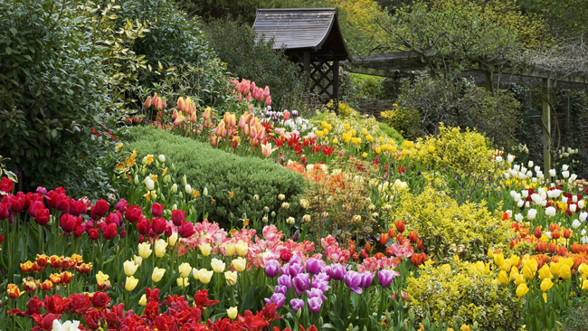
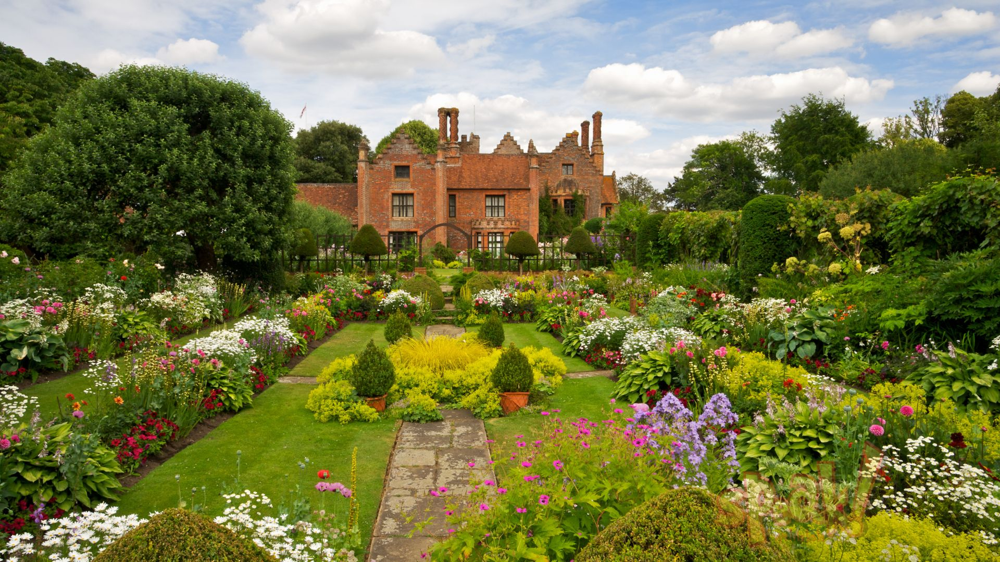

Az angolparkok és angolkertek
A tájképi kert vagy angolkert kerttörténeti stílus és kertforma, ami napjaink kertjeinek elődjének tekinthető. Az angoloknál az 1700-as évek elején, Európában a század második felében jelent meg.
A 18. századi Angliában a parkszerű kertekhez a természet szolgált modellként még akkor is, ha ez a természetfelfogás idealizált és romantikus volt.
Elrendezés
Fákat, díszcserjéket és virágokat úgy ültetnek be, hogy a növények elrendezésében semmilyen szabályosság ne legyen. Ekképp a virágokat sosem ültetik ágyásokba, hanem elszórtan díszítik a gyepet; közöttük gyakoriak a hagymás növények. Az angolkert kialakításának ugyanis az a célja, hogy „ideális tájékot” mutasson – olyat, amely nem mesterkélt, hanem mintegy természetszerű.

Az utakat gondosan ápolják, de azok vonalvezetése nem szabályos; itt-ott útvesztők is vannak. A fákat ligetszerű csoportokban vagy nagyobb, gyepes területeken egyenként ültetik. Az angolkert szépségét nagyban emelik a kisebb tavak, a kerten átfutó patakok. A honi fák és cserjék mellett előszeretettel ültetnek importált díszfákat és díszcserjéket; különösen kedveltek a platánok.
Régebben gyakran „angolkertnek” nevezték a vadaskerteket, mivel először az angol vadaskerteket alakították valódi művészettel idealizáltan szép tájakká.

Angolkert
Az angolkerteket "japánkerteknek" is nevezik, elterjedésük az 1720-tól 1920-ig tartó időszakra tehető. A barokk kertek vagy franciakertek utáni kertforma, és mint ilyen elveti a cicomát és a pompát.
A klassicizmus, művészeti stílus jegyeinek képviselője és jellemzője a visszafordulás a természet szépségeihez. Alexander Pope angol költő az első, aki megfogalmazta az angolkertek közös tulajdonságait, vagyis:
- tájba illő legyen, ne váljon el a természetes környezettől
- geometriai szabályozottsága ne legyen
- a növények elhelyezése csoportos, fel-felbukkanó
- kerítés ne legyen
- kontraszt alkalmazása